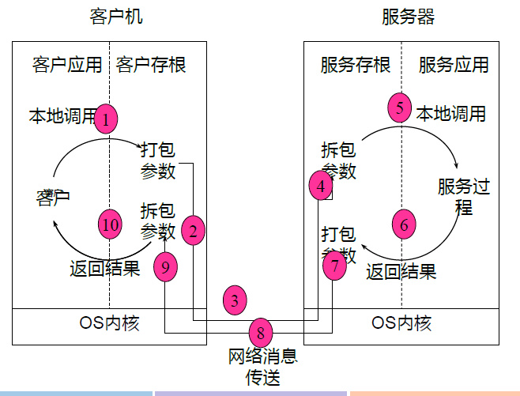

Socket
using TCP
- TCP (Transmission Control Protocol) is a standard that defines how to establish and maintain a network conversation via which application programs can exchange data.
In Java
- need
java.net.Socketandjava.net.ServerSocket - create
ServerandClientModels
Using UDP
- UDP (User Datagram Protocol) is an alternative communications protocol to Transmission Control Protocol (TCP) used primarily for establishing low-latency and loss-tolerating connections between applications on the internet.
In Java
- need
java.net.* - using
DatagramPacketandDatagramSocket
RPC
Remote Procedure Call，a pro- computer program causes a procedure (subroutine) to execute in a different address space (commonly on another computer on a shared network), which is coded as if it were a normal (local) procedure call, without the programmer explicitly coding the details for the remote interaction.
- Procedure：Client
- Callee procedure：Server
- Function or Method：Service
- call remote function (Method) Behavior like local call
- 
- How to call function using function name?
Server
- need a thread of this method to wait for response from client(service)
- need the class implement
- need a interface to register this service
Client
- need the interface of class needed
- need a new Proxy Instance to proxy this method for client
Serialization
Serialization is the process of converting an object into a stream of bytes to store the object or transmit it to memory, a database, or a file.
module
- IDL（Interface description language）文件
- 参与通讯的各方需要对通讯的内容需要做相关的约定
- IDL Compiler
- 将IDL文件转换成各语言对应的动态库
- Stub/Skeleton Lib
- 负责序列化和反序列化的工作代码
- Client/Server
- 指的是应用层程序代码
- 底层协议栈和互联网
Protocol
- XML
- JSON
- Protobuf
- Thrift
- Avro